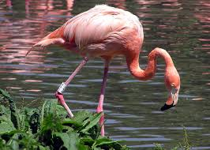

El flamenco es un ave conocida por su color rosado, sus largas patas y su cuello largo y flexible.
Los flamencos viven en lagunas, lagos salados y zonas costeras.
Se alimentan de algas, pequeños crustáceos y microorganismos del agua.